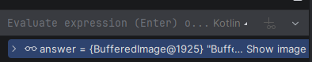

Load SmallImage into IntelliJ
SmallImage is supplied by an IntelliJ plugin. The plugin can turn an image on your clipboard into Kotlin code and set up the supporting library files for the project.
- Download the SmallImage plugin zip file.
- In IntelliJ's top menu bar, choose Help, then Find Action.
- Search for Install Plugin from Disk, choose it, and select the zip file you downloaded. Follow IntelliJ's restart prompt if it appears.
- Copy an image to your clipboard. In a Kotlin file, right-click where you want the value and choose Paste Image Literal.
Using Paste Image Literal adds the SmallImage library at src/edu/wpi/intro/SmallImage.kt and saves the pasted image under resources/smallimage.images/. The library's package is edu.wpi.intro; a file that uses its image functions normally begins with:
import edu.wpi.intro.*Images Are Values
In this library, the Image type describes simple values that can be given and returned from functions similar to String or Int. The image-building and transforming functions below return new Image values. The show function displays an image. Giving intermediate images names makes a picture-building expression easier to read and inspect.
The runnable examples already include SmallImage. Click Run code to display their images below the editor, then edit and run again. Each example works on its own. A checkerboard shows transparent areas; it is not part of the image.
Create an initial Image
Paste an Image Literal from your clipboard
Go to the internet or your photos app and copy an image to your computer's clipboard (right-click, copy).
For example, type val myImg =, place the cursor immediately to the right of the equals sign, then right-click and choose Paste Image Literal. The pasted image gets a randomly picked id string and IntelliJ completes the value definition for you:
val myImg = img("734b8a20-66c2-44b7-836e-5305bdedde39")The plugin saves the clipboard image as 734b8a20-66c2-44b7-836e-5305bdedde39.png in resources/smallimage.images/. The img call loads that saved image and produces the Image value named myImg.
You can also put in a url to an image starting with http:// or https:// to load an image from the internet.
show an Image to an output window
show(anImage) displays an image value, much as println(...) displays a text or number value. Creating an image does not display it automatically: pass the image to show to see it. In these editors, the result appears directly below the code.
fun main() {
val anImage = rectangle(100, 60, "solid", "tomato")
show(anImage)
}Use functions to create image values
rectangle
rectangle(width, height, mode, color) creates a rectangle. Width and height are positive pixel counts. The mode is "solid" or "outline"; the color can be a name such as "tomato" or a Color value.
fun main() {
val banner = rectangle(180, 40, "solid", "tomato")
val border = rectangle(180, 40, "outline", "black")
show(banner)
show(border)
}emptyImage
emptyImage(width, height) makes a transparent image of the requested positive size. It is useful as a blank starting canvas or a spacer.
fun main() {
val spacer = emptyImage(24, 40)
show(spacer)
show(beside(
rectangle(40, 40, "solid", "tomato"),
spacer,
rectangle(40, 40, "solid", "navy")
))
}Arrange Images
above
above(image1, image2, ...) stacks one or more images from top to bottom. Its optional horizontal argument is "left", "center", or "right".
fun main() {
val centeredStack = above(
rectangle(120, 24, "solid", "gold"),
rectangle(80, 24, "solid", "navy")
)
show(centeredStack)
}Without the optional argument, the images are centered horizontally.
fun main() {
val stacked = above(
rectangle(120, 24, "solid", "gold"),
rectangle(80, 24, "solid", "navy"),
horizontal = "left"
)
show(stacked)
}beside
beside(image1, image2, ...) places one or more images from left to right. Its optional vertical argument is "top", "center", or "bottom".
fun main() {
val sideBySide = beside(
rectangle(36, 60, "solid", "blue"),
rectangle(36, 60, "solid", "white"),
rectangle(36, 60, "solid", "red")
)
show(sideBySide)
}Without the optional argument, the images are centered vertically.
fun main() {
val flag = beside(
rectangle(36, 60, "solid", "blue"),
rectangle(36, 60, "solid", "white"),
rectangle(36, 60, "solid", "red"),
vertical = "center"
)
show(flag)
}overlay
overlay(top, bottom) centers the first image on top of the second. The returned image is large enough to contain both images.
fun main() {
val sign = overlay(
rectangle(80, 20, "solid", "white"),
rectangle(140, 70, "solid", "navy")
)
show(sign)
}Transform an Image
flipHorizontal
flipHorizontal(image) mirrors an image left-to-right. It returns a new image with the same dimensions as the original.
fun main() {
val picture = beside(
rectangle(24, 48, "solid", "tomato"),
rectangle(48, 24, "solid", "navy"),
vertical = "top"
)
show(picture)
show(flipHorizontal(picture))
}flipVertical
flipVertical(image) mirrors an image top-to-bottom. It returns a new image with the same dimensions as the original.
fun main() {
val picture = beside(
rectangle(24, 48, "solid", "tomato"),
rectangle(48, 24, "solid", "navy"),
vertical = "top"
)
show(picture)
show(flipVertical(picture))
}rotate
rotate(degrees, image) rotates an image counterclockwise. The result expands when necessary so the rotated image is not clipped.
fun main() {
val picture = beside(
rectangle(24, 48, "solid", "tomato"),
rectangle(48, 24, "solid", "navy"),
vertical = "top"
)
val turned = rotate(90.0, picture)
show(picture)
show(turned)
}scale
scale(factor, image) multiplies both the width and height by the same positive factor, keeping the image's proportions. A factor of 2.0 doubles both dimensions; 0.5 halves them. The original image is unchanged.
fun main() {
val banner = rectangle(80, 40, "solid", "tomato")
val larger = scale(2.0, banner)
show(banner)
show(larger)
}scaleTo
scaleTo(width, height, image) produces a new image with exactly the requested width and height in pixels. Both dimensions must be positive integers. Unlike scale, it can stretch the image if the new width and height have different proportions.
fun main() {
val banner = rectangle(80, 40, "solid", "navy")
val resized = scaleTo(120, 80, banner)
show(banner)
show(resized)
}Image, so it can become an input to another one. For example, rotate(90.0, overlay(top, bottom)) first overlays the two images, then rotates the combined result.View an Image While Debugging
Images are values, so IntelliJ can show them when execution stops at a breakpoint. Put a breakpoint on a line after the image has been created, then start the program with Debug rather than Run.
fun main() {
val answer: Image = overlay(
rectangle(60, 60, "solid", "gold"),
rectangle(100, 80, "solid", "navy")
)
println(answer.width) // Set a breakpoint here.
show(answer)
}When the debugger stops, find answer in the Variables pane. Next to its BufferedImage value, click Show image. IntelliJ opens a preview of the image value.

Image value in the debugger.